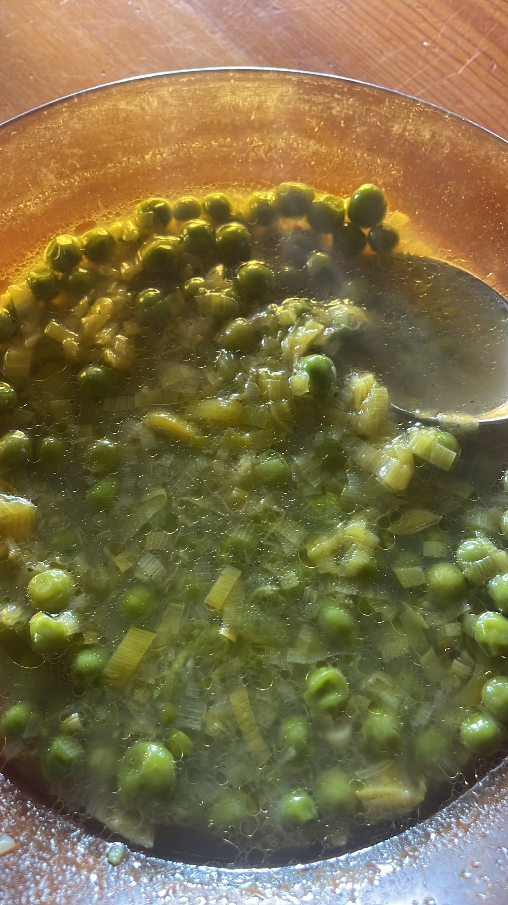

Guisantes del Sur
Ingredients
×
- cebolla tierna
- ajo
- 150 g de guisantes frescos por persona
- laurel
- pasta o arroz

Preparación
Paso 1
Se sofríe un poco cebolla tierna con ajo.
Paso 2
Se añaden 150 g de guisantes frescos por persona y laurel.
Paso 3
Dejar cocer un buen rato (quedan un poco líquidos).
Paso 4
Servir con pasta o arroz.